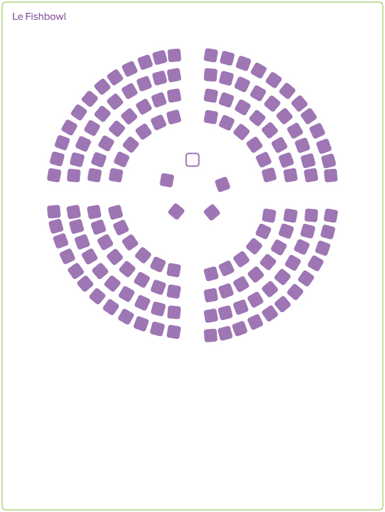

Le fishbowl
Description sommaire
L’idée de base de cette activité est de créer une conversation avec un grand groupe autour d’une question ou d’un sujet précis. Il s’agit de réfléchir sur une question ou un enjeu afin de l’approfondir ou de l’explorer, en misant sur l’échange par le biais d’une discussion ouverte et non dirigée. Cet outil peut être utilisé dans plusieurs contextes participatifs tels que des ateliers, conférences, réunions organisationnelles et assemblées publiques. Il a comme objectif que l’ensemble de la discussion se structure toute seule.
 Objectif principal
Objectif principal
de l’outil
 Étape du processus de
Étape du processus de
planification collective
 Les incontournables pour une rencontre réussie
Les incontournables pour une rencontre réussie
 Prérequis
Prérequis
Avoir un grand thème ou une grande question qui interpelle les gens et stimule la conversation.
 Matériel requis
Matériel requis
- Feuilles papier-affiche
- Grille de notes pour les observateurs
- Tablette de feuilles Post-it de très grand format (grandeur papier-affiche)
- Marqueurs
 Taille du groupe
Taille du groupe
Moyen
10-30
Grand
30-75
T-grand
75+
 Durée de l’animation
Durée de l’animation
60 à 90 minutes.
 La valeur ajoutée
La valeur ajoutée
Le Fishbowl est intéressant car c’est une formule que peu de gens ont expérimentée. En plus d’assurer une discussion transparente, le Fishbowl installe un échange dynamique et efficace. Une fois les règles bien expliquées, l’animateur joue un rôle plus discret d’observateur et de recadrage, ce qui permet de donner la responsabilité de l’échange aux participantes et participants.
François Gaudreault
Conseiller en développement collectif
 Préparation
Préparation
La salle est préparée avec deux cercles concentriques de chaises.
On place 5 chaises au centre et les autres sont placées à l’extérieur (pour les groupes plus importants, on peut aller jusqu’à 8 chaises au centre).

Avoir préparé au moins 2 questions. Par exemple :
- Quelles seraient les conditions à mettre en place ou les solutions à envisager pour relever ce défi?
- Qui pourrait vous appuyer et contribuer à relever ce défi et comment?
 Déroulement de l’animation
Déroulement de l’animation
Étapes
1. Invitez 4 personnes à s’installer dans le cercle du centre en laissant une chaise vide.
Elles auront comme tâche d’être les premières à discuter de la question qui leur sera lancée (identifiez les personnes à l’avance pour le premier tour).
2. Expliquez au groupe les consignes à suivre (5 min)
- Une première question sera lancée au groupe du centre afin de démarrer une discussion entre eux.
- Les personnes qui souhaitent se joindre à la discussion devront se lever et aller s’asseoir sur la chaise vide et participer à l’échange.
- En contrepartie, une des personnes assises au centre devra se lever et aller s’asseoir sur une chaise disponible dans le cercle extérieur.
- Les personnes extérieures sont également invitées à noter leurs observations sur la grille de notes qui leur a été fournie.
3. Démarrez la discussion en posant la première question (20 min)
- Invitez les gens au centre à y répondre comme s’ils discutaient. Il ne faut pas que ceux-ci y répondent à tour de rôle, mais plutôt dans le cadre d’une discussion, d’un échange.
- Soyez le plus discret possible et intervenez seulement pour recadrer les échanges si on s’éloigne trop du sujet de discussion.
- Après 20 minutes environ, arrêtez la discussion.
4. Posez la deuxième question (20 min)
- Invitez les gens qui le souhaitent à former le premier quatuor de discussion et on repart l’activité.
5. Synthèse et bonification : retour en grand groupe avec les participantes et participants observateurs (15 min)
- Invitez les gens à s’exprimer sur ce qu’ils ont noté.
- Notez le tout sur le papier-affiche (très grands Post-it).
 Pièges à éviter
Pièges à éviter
- Prendre part à la discussion. Il faut que ce soit un échange libre et fluide où il y a le moins d’interruption possible.
- Escamoter la partie « synthèse » par manque de temps! C’est pourtant une partie essentielle de cette animation. En effet, les participantes et participants peuvent avoir l’impression qu’ils ont été incohérents et qu’ils sont sortis du sujet, mais c’est rarement le cas. La synthèse vient faire ressortir les éléments essentiels et permet une certaine convergence.
 Suggestions et variantes
Suggestions et variantes
Utilisez un tableau blanc ou 5 à 6 feuilles de papier-affiche collées sur un mur et notez vos observations au fur et à mesure que la discussion se déroule. C’est une façon de faciliter la synthèse par la suite!
 Référence
Référence
Télécharger la version PDF de l'outil
SLOCUM, Nikki, ELLIOT, Janice, HEESTERBEEK, Sara et Carolyn J. Lukensmeyer. Méthodes participatives : Un guide pour l’utilisateur, 2006, Fondation Roi Baudouin, 204 pages, http://www.kbs-frb.be/publication.aspx?id=294864&langtype=2060.